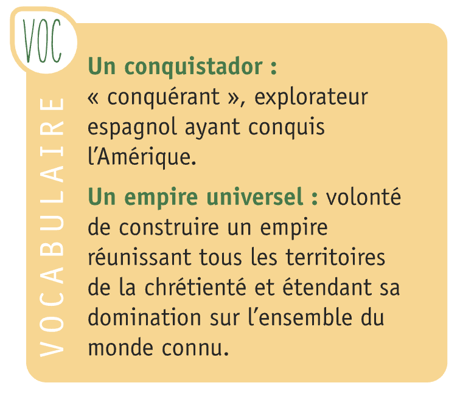
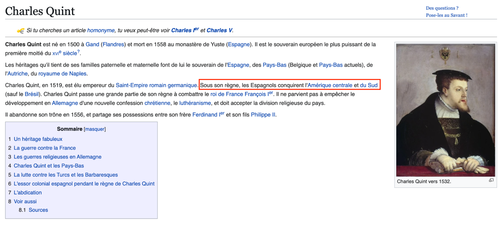

La méthode
Pour chaque lettre, dites ce qu'elle veut dire, puis retournez la carte.
Quand j'emploie un mot du cours dans ma phrase (lors d’une rédaction ou d’une réponse à une question), j'écris toujours le mot exact du cours, pas un à-peu-près.
Pour un mot spécifique du cours, j'ajoute « c'est-à-dire » juste après.
Après le “C’est-à-dire…” j'explique le sens avec mes propres mots. Si je recopie le cours, je n'ai rien montré. Il faut que ce soit expliqué par moi sinon je n’apprends rien.
Le format de réponse. La glose ne se pose pas toute seule : le mot vit d'abord dans une phrase, la glose vient après. « {le mot/expression}, c'est-à-dire … . » |
Le nombre de phrases demandé dans une consigne est un cadre, pas un critère : il t'empêche de répondre en un seul mot, mais il n'est pas noté.
L'exemple corrigé
Énoncé — Charles Quint et l'empire universel
Charles Quint et l'empire universel Grand voyageur, Charles de Habsbourg (1500-1558) devient empereur en 1519 sous le nom de Charles Quint. Son règne coïncide avec de grandes expéditions de découverte du monde. Son empire s'étend par-delà les océans. Il tente de constituer un empire universel. Manuel de 5e, chapitre 6, dossier 2, page 122. |
Vocabulaire : coïncider = se passer en même temps · une expédition = un voyage organisé · par-delà = de l'autre côté de |
1. Écrivez une phrase complète qui donne le nom sous lequel Charles de Habsbourg devient empereur.
2. Expliquez ce que Charles Quint cherche à construire.
Mots interdits pour la question 2 : volonté – réunissant – territoire de la chrétienté – étendant – domination – l’ensemble
3. Expliquez en deux phrases ce que font les Espagnols en Amérique pendant le règne de Charles Quint.
Le corrigé, étape par étape
En italique, tu as les explications du processus.
Consigne 1 — le piège de la glose inutile
On me demande une phrase complète : je reprends les termes de la question et j'y ajoute le nom que je trouve dans le texte.
Charles de Habsbourg devient empereur sous le nom de Charles Quint.
Est-ce que je dois gloser quelque chose ? « Empereur » ? Non — tout le monde sait ce qu'est un empereur (enfin, sauf si tu ne l'as pas appris en 6e — mais c'est peu probable), c'est un mot du langage courant, un mot de tous les jours. Si j'écris « empereur, c'est-à-dire un chef », je n'ai rien ajouté et j'ai alourdi ma phrase. On ne glose pas pour faire joli. On glose pour améliorer sa compréhension des notions du cours et surtout pour que le prof, un camarade ou un parent puisse vérifier si tu as bien compris le sens du mot et que tu es capable de l’expliquer simplement. C’est la meilleure manière pour maîtriser un vocabulaire complexe, des concepts, etc…
Consigne 2 — le mot est dans le texte, et le piège est le recopiage
2. Expliquez ce que Charles Quint cherche à construire.
Je lis la question, je cherche l'information dans le texte. Elle y est : « Il tente de constituer un empire universel. » Je fais comme d'habitude : je reprends les termes de la question et j'ajoute ce que dit le texte.
Premier réflexe
Charles Quint cherche à construire un empire universel.
On pourrait s'arrêter là. Mais est-ce que j'ai montré que j'avais compris quelque chose ? Non. J'ai déplacé une phrase du texte vers ma feuille. « Empire universel » — est-ce que je sais ce que ça veut dire ? Si je ne peux pas l'expliquer, c'est que je ne l'ai pas compris.
Est-ce que « empire universel » se glose ? Oui. Ce n'est pas du langage courant, c'est un concept du cours. Donc j'écris le mot, puis je le glose.

Deuxième réflexe
Charles Quint cherche à construire un empire universel, c'est-à-dire la volonté de construire un empire réunissant tous les territoires de la chrétienté et étendant sa domination sur l'ensemble du monde connu.
La définition était dans l'encadré du manuel, alors je l'ai recopiée. Je relis. Deux problèmes. Personne ne sait si j'ai compris : ce sont les mots du manuel, pas les miens. Et ça ne veut rien dire : « un empire, c'est-à-dire la volonté de construire un empire ». J'ai expliqué le mot par lui-même.
Pour m'empêcher de recopier, le prof donne des mots interdits, c'est-à-dire les mots du texte que je n'ai pas le droit de réutiliser.
Je reprends morceau par morceau.
« Volonté » : je le supprime, c'est lui qui rendait ma phrase absurde.
« Réunissant » : je cherche plus simple — regrouper, unifier, rassembler. Je prends « regrouper ».
« Territoires de la chrétienté » : les pays chrétiens, tout simplement.
« Étendant sa domination sur l'ensemble du monde connu » : là, je me le dis d'abord à l'oral, comme si j'expliquais à quelqu'un — ça veut dire que l'empire cherche à dominer le monde. Mais « domination » est interdit. Quel synonyme je connais ? Pouvoir, puissance, maîtrise. Je prends le plus simple : pouvoir.
La bonne réponse
Charles Quint cherche à construire un empire universel, c'est-à-dire un empire qui regrouperait tous les pays chrétiens et qui chercherait à agrandir son pouvoir sur le monde.
Je relis : le mot du cours est là, la glose vient juste après, aucun mot interdit n'apparaît. Et cette fois je comprends ce que Charles Quint voulait faire.
Recopier une définition, ce n'est pas la comprendre. Tant que tu ne peux pas dire un mot autrement, c'est que tu ne l'as pas compris — et c'est là que le travail commence.
Consigne 3 — le mot vient de moi, pas du texte
Le texte ne le dit pas. Le mot dont j'ai besoin n'est pas sous mes yeux, il faut aller le chercher. Je pars quand même de ce que le texte me donne : Charles Quint devient empereur en 1519. Qu'est-ce que je sais qui se passe en Amérique à ce moment-là ? 1492, Christophe Colomb — c'est juste avant. Donc les Espagnols y sont déjà.
Si je ne me souviens de rien (ça arrive, l'année de 5e est loin), je cherche : mon cahier de l'an dernier, le manuel, le CDI. Et à la maison, Vikidia — mais seulement pour trouver le mot, pas pour recopier la phrase. Dans le manuel je trouve « conquistador ». C'est celui-là qu'il me faut : ce n'est pas du langage courant, donc c'est lui que je vais gloser.

Ce qu'il ne faut pas écrire
Pendant son règne, les Espagnols envoient des conquistadors, c'est-à-dire des conquistadors espagnols.
Je relis. J'ai expliqué le mot par le mot. Le lecteur n'a rien appris, et moi non plus. Une glose qui reprend le mot n'est pas une glose.
Je recommence. Un conquistador, c'est quoi, avec mes mots à moi ? Un soldat. Un soldat qui part conquérir. Conquérir quoi ? l'Amérique. Voilà ma glose.
La bonne réponse
Pendant son règne, les Espagnols envoient des conquistadors, c'est-à-dire des soldats partis conquérir l'Amérique. Ils détruisent les empires aztèque et inca en quelques années.
Je vérifie les critères : le mot exact est là, la glose suit avec « c'est-à-dire », et elle est faite avec mes mots. C'est bon.
Quand le mot n'est pas dans le texte, rien ne change : on l'écrit, on le glose. Le seul travail en plus, c'est d'aller le chercher — dans sa tête d'abord, dans son cours ensuite.
Comment faire pour reformuler
Dis-toi la définition à l'oral, comme si tu l'expliquais à un copain.
Écris-la au brouillon, telle que tu viens de la dire.
Enlève les tournures orales : à l'écrit, le copain n'est pas là.
Relis, et vérifie qu'aucun mot interdit n'y est resté.
Critères de réussite
Vérification du troisième critère, sur la réponse de la question 2 : regrouperait · pays chrétiens · agrandir · pouvoir. Aucun mot interdit n'apparaît, et la glose n'emploie pas les mots du manuel. Le critère est atteint.
S'entraîner
Exercice 1 — Les premiers empires coloniaux
Les premiers empires coloniaux Au XVIe siècle, l'Espagne et le Portugal prennent le contrôle de vastes territoires en Amérique. Ils y installent des colonies, où des Européens s'établissent, et des comptoirs, où l'on échange des marchandises. Ces territoires sont administrés depuis l'Europe : le pays qui les dirige s'appelle la métropole. Texte de rappel, d'après le chapitre 6 du manuel de 5e, « Le monde au XVIe siècle ». |
Vocabulaire : s'établir = venir vivre quelque part · administrer = diriger, gouverner |
1. Écrivez une phrase complète qui donne les deux pays d'Europe qui prennent le contrôle de territoires en Amérique.
2. Expliquez en deux phrases la différence entre les deux sortes de territoires que l'Espagne et le Portugal installent en Amérique. Employez et glosez les mots colonie et comptoir.
L’Espagne et le Portugal ont deux sortes de territoires : ils ont des colonies, c’est à dire un endroit qui est dirigé par un autre pays qui est prévu pour installer des nouveaux habitants. Ils ont aussi des comptoirs, c’est à dire un endroit où ils échangent des biens ou des ressources.
3. Expliquez en deux phrases qui prend les décisions pour ces territoires. Employez et glosez le mot métropole.
Mots interdits (questions 2 et 3) : s'établir – venir vivre quelque part – échanger – marchandises – administrer – diriger – gouverner
Voir la correctionMasquer la correction
Correction — exercice 1 · Les premiers empires coloniaux
1. L'Espagne et le Portugal prennent le contrôle de territoires en Amérique.
Où la norme se voit : Aucun mot du lexique ici. Ne rien gloser est la bonne réponse : on ne glose pas pour faire joli.
2. Ils installent des colonies, c'est-à-dire des territoires que des Européens occupent et où ils font leur vie. Ils installent aussi des comptoirs, c'est-à-dire des lieux où l'on fait seulement du commerce, sans y rester.
Où la norme se voit : Deux mots du cours, deux gloses. « Colonie » et « comptoir » ne sont pas du langage courant.
3. Les décisions sont prises en Europe, par la métropole, c'est-à-dire le pays d'origine qui garde le pouvoir sur ces territoires. Rien ne se décide sur place.
Où la norme se voit : Une seule glose. « Garde le pouvoir » remplace « diriger » et « administrer », qui sont interdits.
Ce qu'on voit souvent : le mot employé sans glose (« ils installent des colonies », et on s'arrête là), ou la définition du manuel recopiée telle quelle.
Exercice 2 — Le roi, sa cour et son royaume
Le roi, sa cour et son royaume À partir de 1682, Louis XIV installe sa cour à Versailles. Autour de lui vivent des milliers de nobles. Le roi les tient ainsi sous les yeux, loin de leurs terres. Dans chaque province, le roi envoie un intendant, un homme choisi par lui. Ce sont eux qui font appliquer ses décisions dans le royaume. Toutes viennent de lui seul. Texte de rappel, d'après le chapitre 8 du manuel de 5e, « Du prince de la Renaissance au roi absolu ». |
Vocabulaire : un noble = un homme d'une famille privilégiée · appliquer = faire respecter |
1. Écrivez une phrase complète qui donne l'année où Louis XIV installe sa cour à Versailles.
2. Expliquez en deux phrases pourquoi Louis XIV fait vivre les nobles auprès de lui. Employez et glosez le mot courtisan.
3. Expliquez en deux phrases comment les décisions du roi arrivent jusqu'aux provinces. Employez et glosez le mot intendant.
Mots interdits (questions 2 et 3) : appliquer – faire respecter – privilégiée
Voir la correctionMasquer la correction
Correction — exercice 2 · Le roi, sa cour et son royaume
1. Louis XIV installe sa cour, c'est-à-dire l'ensemble des personnes qui vivent auprès du roi, à Versailles en 1682.
Où la norme se voit : attention, ici il y a un mot du cours. Une date ne se glose pas, mais « cour » oui. La position de la question ne dit rien : c'est le mot qui décide, pas la place de la question.
2. Il garde les nobles près de lui pour les surveiller. Ces nobles deviennent des courtisans, c'est-à-dire des nobles qui passent leurs journées auprès du roi au lieu de rester sur leurs terres.
Où la norme se voit : « Courtisan » n'est pas dans le texte : la consigne le donne. Le travail n'est pas de le trouver, il est de l'expliquer avec ses propres mots.
3. Les décisions du roi arrivent aux provinces par les intendants, c'est-à-dire des hommes que le roi choisit lui-même et qu'il envoie sur place pour le représenter. Ils veillent à ce que les ordres du roi soient suivis.
Où la norme se voit : Une seule glose. « Intendant » est dans le texte, mais le texte ne dit pas ce qu'est un intendant : il faut le dire avec ses mots.
Ce qu'on voit souvent : « les nobles ils sont à Versailles », sans jamais employer le mot courtisan — le mot du cours est évité au lieu d'être glosé.
Exercice 3 — Le port et ses négociants
Le port et ses négociants Au XVIIIe siècle, Nantes et Bordeaux s'enrichissent par le commerce maritime. Les négociants achètent et revendent des marchandises venues de loin. Les armateurs, eux, équipent les navires : ils paient l'équipage, les vivres et la cargaison, puis partagent les bénéfices. Tous les navires ne suivent pas le même trajet. Certains vont directement aux Antilles. D'autres s'arrêtent d'abord sur les côtes d'Afrique. Texte de présentation du chapitre H1, « Bourgeoisies marchandes, négoces, traites et esclavage ». |
Vocabulaire : les vivres = la nourriture emportée · un bénéfice = l'argent gagné · les Antilles = les îles françaises d'Amérique · la droiture = un voyage qui va d'Europe aux Antilles et qui revient, sans s'arrêter en Afrique |
1. Écrivez une phrase complète qui donne les deux ports français cités dans le texte.
2. Expliquez en deux phrases qui paie pour qu'un navire puisse partir. Employez et glosez le mot armateur.
3. Expliquez en deux phrases pourquoi tous les navires ne suivent pas le même trajet. Employez et glosez le mot droiture.
Mots interdits (questions 2 et 3) : équiper – vivres – la nourriture emportée – bénéfice – l'argent gagné
Voir la correctionMasquer la correction
Correction — exercice 3 · Le port et ses négociants
1. Les deux ports cités sont Nantes et Bordeaux.
Où la norme se voit : Deux noms de villes. Ne rien gloser est la bonne réponse.
2. C'est l'armateur qui paie, c'est-à-dire celui qui donne tout l'argent nécessaire pour préparer un navire avant son départ. Il paie les marins, ce qu'ils mangeront pendant le voyage et ce que le navire transporte, puis il touche une part de ce que rapporte le voyage.
Où la norme se voit : le mot du cours est glosé directement, « armateur, c'est-à-dire celui qui… ». C'est le format normal : le mot d'abord, la glose juste après.
3. Certains navires font la droiture, c'est-à-dire qu'ils vont droit aux îles d'Amérique et reviennent aussitôt, sans passer par ailleurs. D'autres s'arrêtent d'abord en Afrique, ce qui allonge leur trajet.
Où la norme se voit : « Droiture » est un mot rare et trompeur : il n'a rien à voir avec l'honnêteté. Le sens est dans l'encadré Vocabulaire, mais le recopier ne suffit pas — il faut le redire autrement.
Ce qu'on voit souvent : « l'armateur c'est celui qui paie » — le mot est employé mais sans glose, alors que rien ne dit ce qu'il paie.
Exercice 4 — La traite atlantique
La traite atlantique Le navire part d'Europe chargé de tissus, d'armes et d'alcool. Sur les côtes d'Afrique, ces marchandises sont échangées contre des hommes et des femmes enlevés ou vendus. Entassés dans la cale, ils traversent l'Atlantique. Ce trajet dure entre six semaines et trois mois. Ceux qui survivent sont vendus en Amérique. Texte de présentation du chapitre H1, « Bourgeoisies marchandes, négoces, traites et esclavage ». |
Vocabulaire : la cale = le fond du bateau, sous le pont · entassé = serré, sans place |
1. Écrivez une phrase complète qui donne la durée de la traversée.
2. Expliquez en deux phrases ce que le navire échange sur les côtes d'Afrique. Employez et glosez le mot captif.
3. Expliquez en deux phrases pourquoi ce voyage n'est pas un commerce comme les autres. Employez et glosez le mot traite.
4. Expliquez en deux phrases ce que deviennent ces personnes une fois arrivées en Amérique. Un mot du cours est nécessaire ici : à toi de le trouver et de le gloser.
Mots interdits (questions 2 à 4) : enlevé – vendu – entassé – serré – sans place
Voir la correctionMasquer la correction
Correction — exercice 4 · La traite atlantique
1. La traversée dure entre six semaines et trois mois.
Où la norme se voit : Une durée. Ne rien gloser est la bonne réponse.
2. Le navire échange des tissus, des armes et de l'alcool contre des captifs, c'est-à-dire des personnes capturées ou achetées, qui ne s'appartiennent plus.
Où la norme se voit : « Captif » n'est pas dans le texte, qui dit « hommes et femmes enlevés ». La consigne le donne, et « enlevé » est interdit : il faut donc trouver autre chose.
3. Ce commerce s'appelle la traite, c'est-à-dire l'échange de marchandises contre des êtres humains. Ce n'est pas un commerce comme les autres, parce que ce sont des personnes que l'on achète et que l'on transporte comme des objets.
Où la norme se voit : Le mot à gloser est celui de la consigne elle-même.
4. Une fois arrivées, ces personnes sont achetées et réduites en esclavage, c'est-à-dire qu'elles deviennent la propriété de quelqu'un et travaillent sans être payées. Elles ne peuvent ni partir ni refuser.
Où la norme se voit : le mot n'est donné ni par le texte ni par la consigne. Il faut aller le chercher dans le cours, comme pour « conquistador » dans l'exercice modèle.
Ce qu'on voit souvent : « la traite c'est la traite des esclaves » — la glose reprend le mot au lieu de l'expliquer. Le critère « mes mots » n'est pas atteint.
Exercice 5 — La plantation et ses adversaires
La plantation et ses adversaires À Saint-Domingue, la canne à sucre pousse dans de grandes exploitations. Le travail y est fait par des esclaves. Le sucre part ensuite vers l'Europe, où il enrichit les ports. Dès 1748, Montesquieu écrit contre l'esclavage. À la fin du siècle, des sociétés se forment pour réclamer sa suppression. Texte de présentation du chapitre H1, « Bourgeoisies marchandes, négoces, traites et esclavage ». |
Vocabulaire : une exploitation = une grande ferme · réclamer = demander avec force · la suppression = la fin, l'arrêt |
1. Écrivez une phrase complète qui donne l'année où Montesquieu écrit contre l'esclavage.
2. Expliquez en deux phrases comment le sucre est produit à Saint-Domingue. Employez et glosez les mots plantation et servile.
3. Expliquez en deux phrases ce que réclament les sociétés qui se forment à la fin du siècle. Employez et glosez le mot abolitionniste.
Mots interdits (questions 2 et 3) : exploitation – ferme – réclamer – suppression
Voir la correctionMasquer la correction
Correction — exercice 5 · La plantation et ses adversaires
1. Montesquieu écrit contre l'esclavage en 1748.
Où la norme se voit : Une date. Ne rien gloser est la bonne réponse.
2. Le sucre est produit dans des plantations, c'est-à-dire de très grands domaines où l'on cultive une seule plante pour la vendre. Le travail y est servile, c'est-à-dire fait par des esclaves qui ne sont pas payés et ne peuvent pas partir.
Où la norme se voit : Deux mots du cours, dont un adjectif. « Servile » se glose comme un nom.
3. Ces sociétés sont abolitionnistes, c'est-à-dire qu'elles se battent pour que l'esclavage soit interdit partout. Certaines veulent aussi qu'on arrête d'abord le commerce des captifs.
Où la norme se voit : « Abolitionniste » est le mot le plus opaque de la banque. La consigne le donne, mais « réclamer » et « suppression » sont interdits : la glose doit être entièrement reformulée.
Ce qu'on voit souvent : la sur-glose : « le sucre, c'est-à-dire un produit sucré ». Un mot de langage courant ne se glose pas — c'est le deuxième critère, dans son autre sens.
Exercice non corrigé
À faire seul, puis à corriger avec les critères — sur la copie du voisin.
Montesquieu contre l'esclavage En 1748, Montesquieu publie un livre où il se moque de ceux qui défendent l'esclavage. Il fait semblant de donner leurs arguments, mais il les écrit de façon si absurde que le lecteur comprend l'inverse. Le texte circule et nourrit le débat. Texte de présentation du chapitre H1, « Bourgeoisies marchandes, négoces, traites et esclavage ». |
Vocabulaire : publier = faire paraître un livre · un argument = une raison donnée pour convaincre · absurde = qui n'a aucun sens · nourrir un débat = donner des choses à discuter |
1. Écrivez une phrase complète qui donne l'année de publication du livre de Montesquieu.
2. Expliquez en deux phrases le procédé que Montesquieu utilise pour critiquer l'esclavage. Employez et glosez le mot ironie.
3. Expliquez en deux phrases pourquoi le livre de Montesquieu fait discuter. Attention : ici, à toi de décider s'il y a un mot à gloser ou non.
Mots interdits (questions 2 et 3) : faire semblant – absurde – une raison donnée pour convaincre – donner des choses à discuter
Ce qu'on voit souvent : « l'ironie, c'est-à-dire quand on est ironique » — la glose reprend le mot au lieu de l'expliquer. Le critère « mes mots » n'est pas atteint. Une glose qui passe : « l'ironie, c'est-à-dire dire le contraire de ce qu'on pense pour se moquer ».
Pour aller plus loin
Reprends une réponse que tu as écrite aujourd'hui. Souligne les mots que tu as glosés et entoure ceux que tu aurais pu gloser sans le faire. En une phrase, dis lequel te manquait le plus — ou, au contraire, lequel tu as glosé alors qu'il ne fallait pas. |